| 日付 | 2024年11月3日（日） |
|---|---|
| 山域 | 奥秩父 |
| メンバー | 単独 |
| 山行形態 | 日帰り |
| アクセス | 車 |
| ルート (Map) | 大輪 (9:08) - (9:42) 清浄の滝 - (10:37) 見晴台 - (10:58) 妙法ヶ岳分岐 - (11:29) 妙法ヶ岳 - (12:36) 三峯神社 - (12:52) ロープウェイ山頂駅跡 - (13:55) 裏参道登山口 - (14:42) 大輪 |
妙法ヶ岳は秩父の奥地にある山だ。
近くにある三峯神社は雲取山の登山口でもあり17年前に訪れた懐かしい場所だ。
その際は妙法ヶ岳に立ち寄れなかったが、今回久々にこの地を訪れ、
下から妙法ヶ岳に登ってみることにする。
紅乃屋の駐車場に車を停める。標高370m。
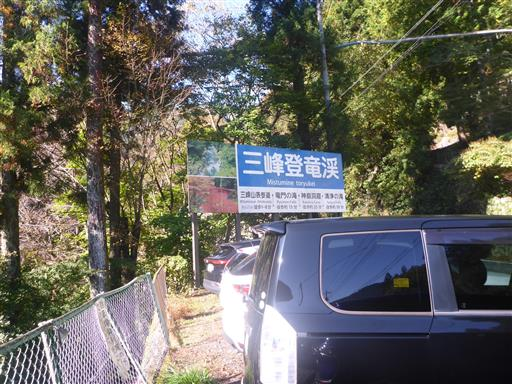
紅乃屋自体はすでに閉館されていて、駐車場は無料開放されている。
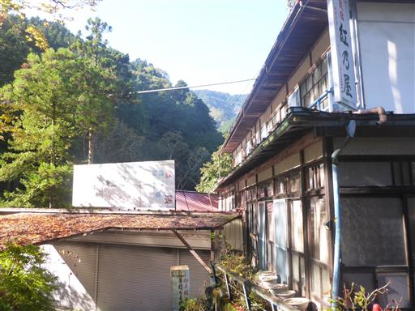
登竜橋を渡って三峯神社の表参道を歩く。
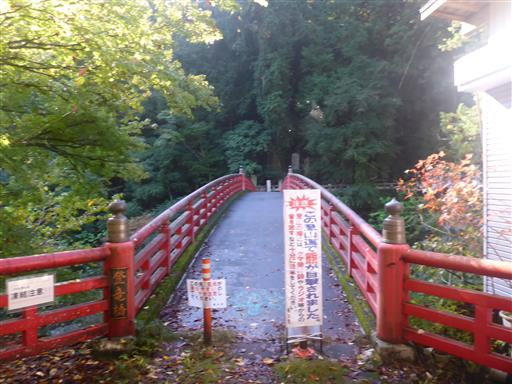
眼下の荒川は昨日雨が降った影響か濁っている。
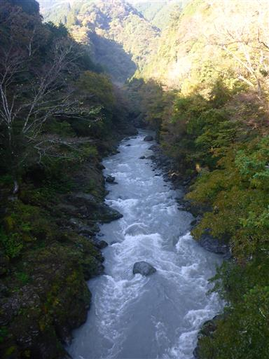
杉と石碑が立ち並ぶ参道を歩く。
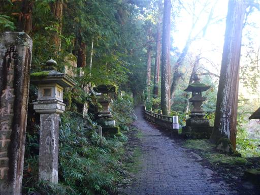
三峰山表参道の標識。上まで車で行けるため、人影は少ない。
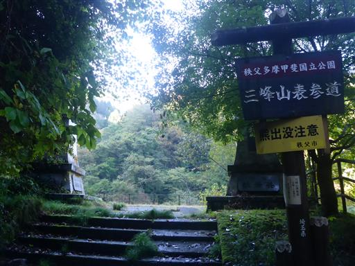
真横に生える大木の脇から木が生えている。
どちらの木もあまり元気がなさそうだ。
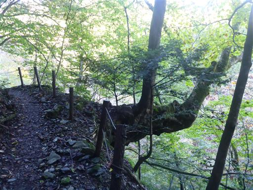
最初は沢沿いの道が続く。左から流入してくる沢を何度か橋で渡る。
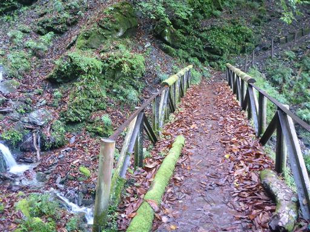
橋から眺める小さな滝。
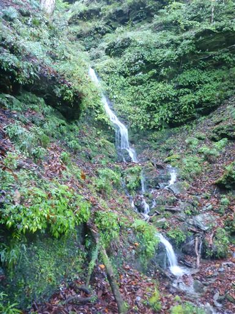
杉の大木の道が続く。
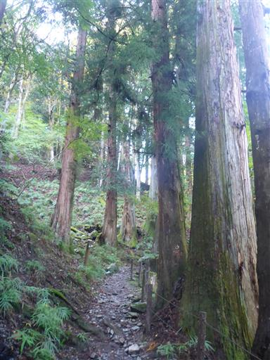
清浄の滝に到着。
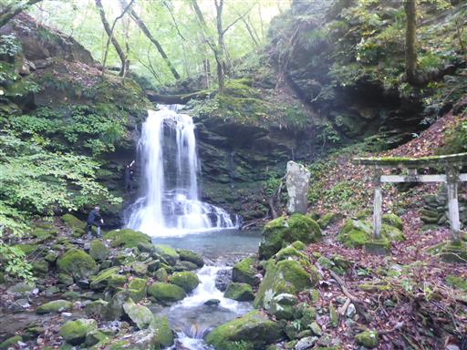
ここには鳥居と石祠がある。
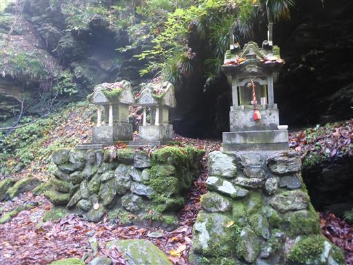
小さい滝だが、二筋の美しい滝だ。
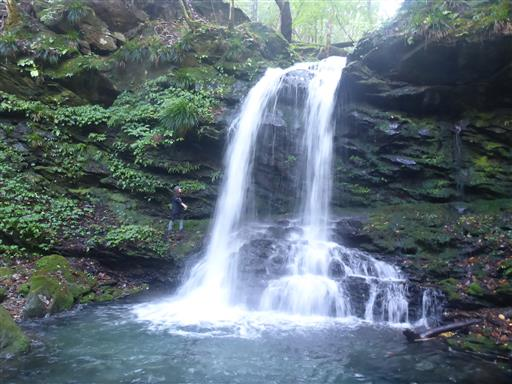
ここからは尾根道。この辺りから杉ではなく自然林が広がるようになる。
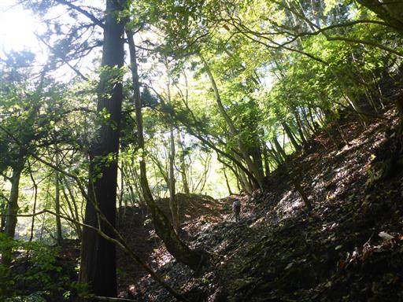
薬師堂跡。側の解説板によると、三峰山表参道の休憩所だったようだ。
薬師堂はなくなったが、今でも東屋があり休憩できるようになっている。
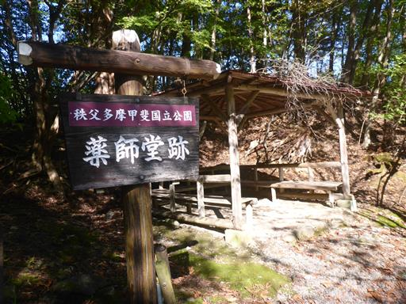
ホオノキの大きな葉で地面が埋め尽くされている。
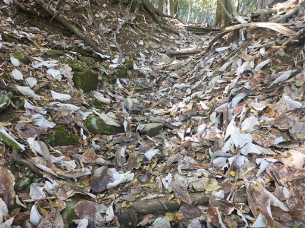
登山道に突然、大きな建物が現れる。
かなり古そうだがそこまで損傷は酷くない。今でも使われているのだろうか？
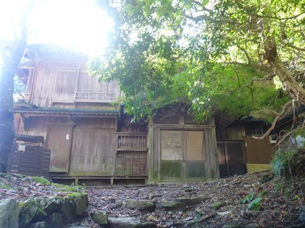
しばらく歩くとその先にもまた大きな建物が現れる。
こちらはかなり綺麗で現役の建物だ。宿坊なのだろうか？
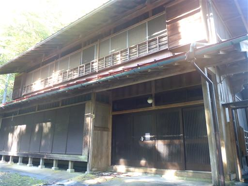
三峯神社近くまで登ってくると、林道に出る。
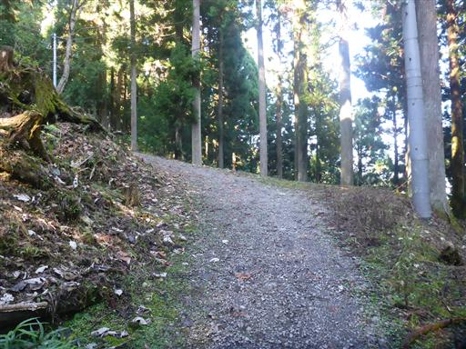
再び登山道に。もう稜線はすぐそこだ。
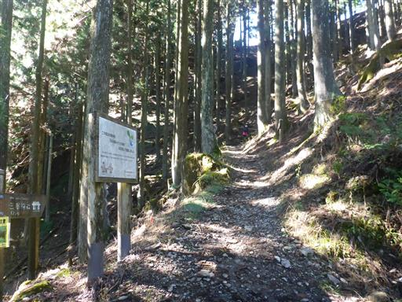
見晴台に到着。ここはもう三峯神社の一角だ。
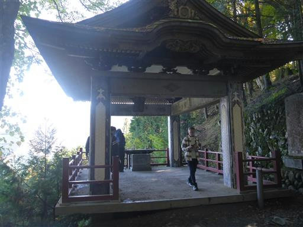
早速展望を眺めてみる。正面右の瘤のような山がおそらく目指す妙法ヶ岳だ。
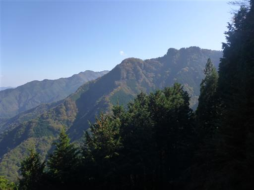
目を左に振る。秩父方面の展望が広がるが、山深いため町はほとんど見えない。
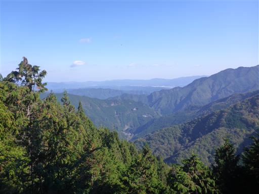
鳥居を潜る。
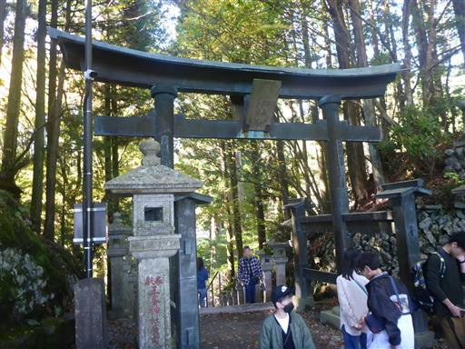
もうここは観光客の世界。左には巨大な石碑がいくつも並んでいる。
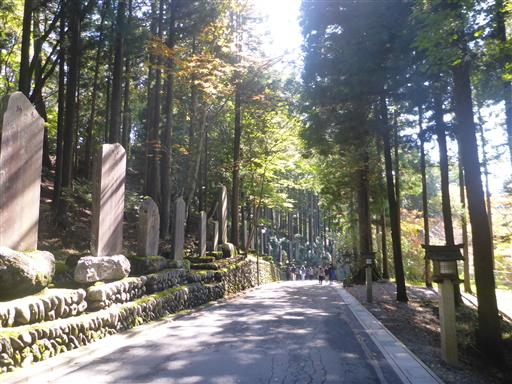
珍しい形の鳥居を潜る。三ツ鳥居という鳥居の様式の一つらしい。
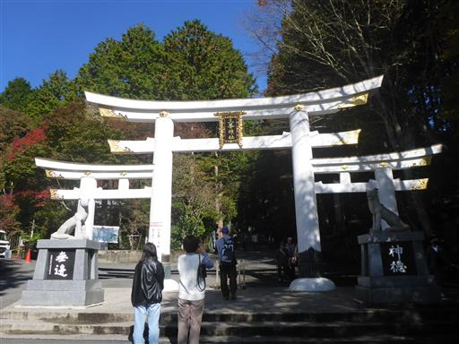
茶屋が並ぶ。観光客の数が多い。すぐ下には大きな駐車場が見えている。
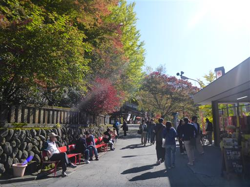
はるか遠くまで続く山並。遠くに見えているのは飛竜山の辺りだ。
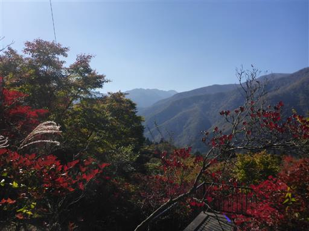
こちらは図体の大きな和名倉山。
この辺りの山に登った時にいつも目を引く山だ。
決して有名な山ではないのだが、すごく存在感がある。
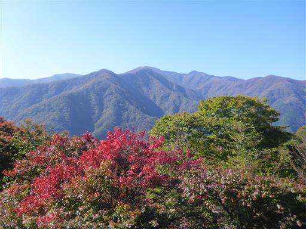
ここから奥宮である妙法ヶ岳を目指す。
以前、雲取山に登った時はここまでタクシーで入り、ここから雲取山を目指した。
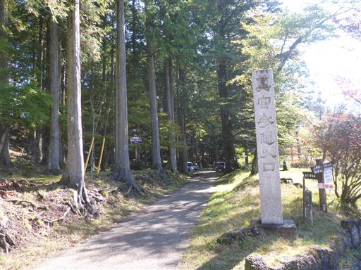
17年振りの訪問と考えると感慨深い。
当時撮った写真と見比べてみたが、当時と変わらぬ風景が広がっている。
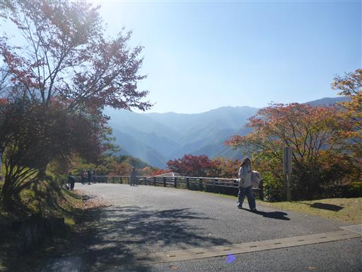
雲取山登山口の標識がある。
雲取山に再訪したい気持ちはあるが、今回目指すのは妙法ヶ岳だ。
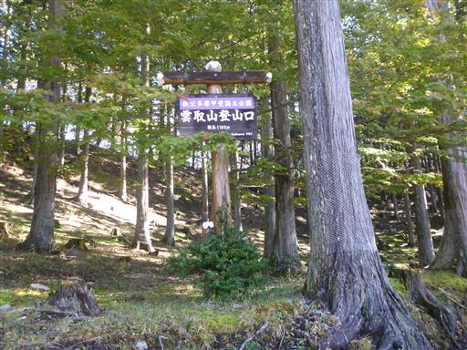
杉が立ち並ぶ道を歩いていく。
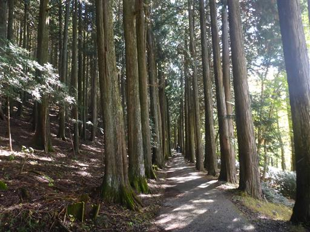
周囲は紅葉が美しい。あと1～2週間後が見頃だろうか？
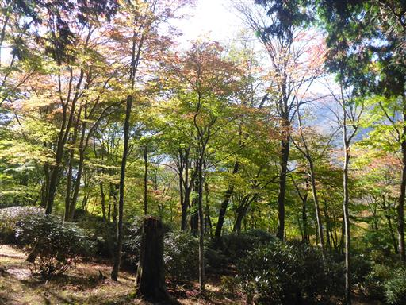
ここで雲取山への道と分かれて、鳥居を潜って妙法ヶ岳を目指す。
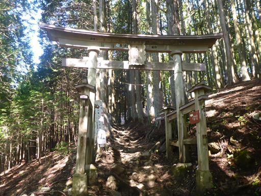
しばらく登りが続く。
一旦登り切って三峯神社に到着した後、再びの登りとなるので足が重い。
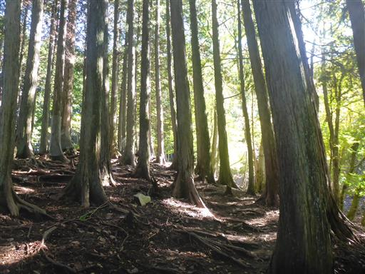
もう一つ立派な鳥居を潜る。
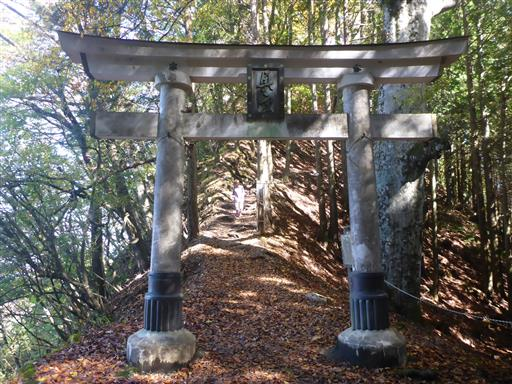
金属製の階段が出てくる。
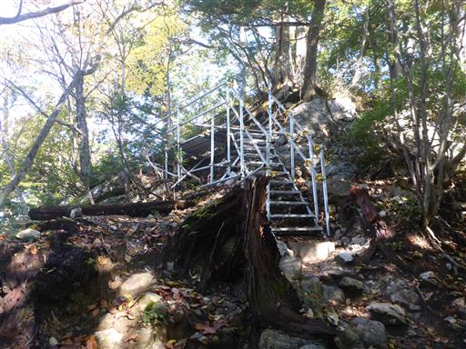
山頂直下はとてつもなく急な階段。
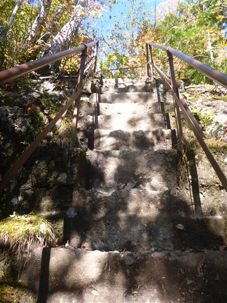
妙法ヶ岳山頂に到着。標高1329m。
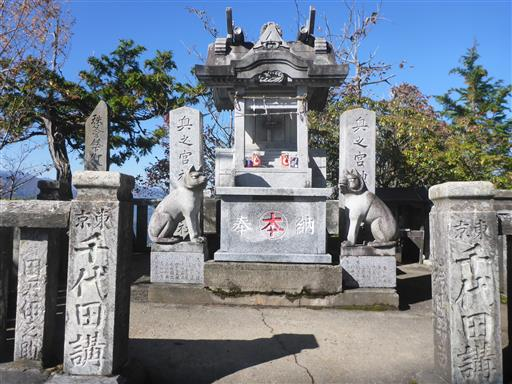
あまり展望の良くない山頂ではあるが、展望ポイントを探して景色を楽しむ。
右奥に見えているのは両神山だ。
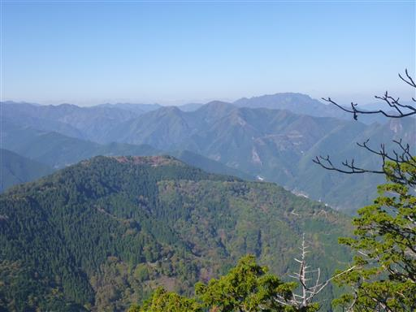
相変わらずよく目立つ和名倉山。
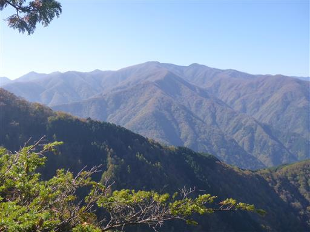
そして雲取山に続く尾根。右奥にわずかに見えているのが雲取山だ。
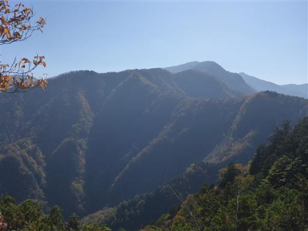
妙法と書かれた石が埋まっている。
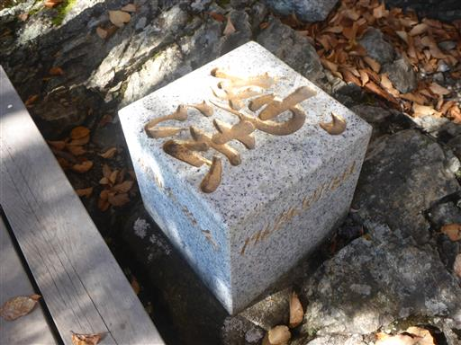
最後の急坂を次々と人が登ってくる。
山頂はものすごく狭いので、展望を楽しんだらすぐ下山する。
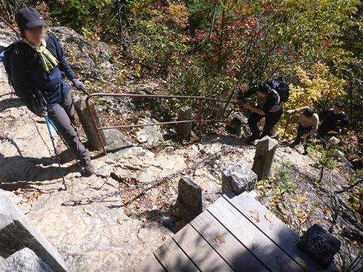
三峯神社付近は道が二手に分かれているため、別の道を歩いてみる。
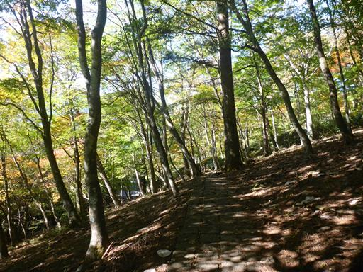
美しい紅葉。
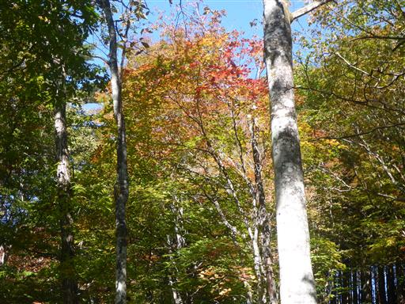
古民家。
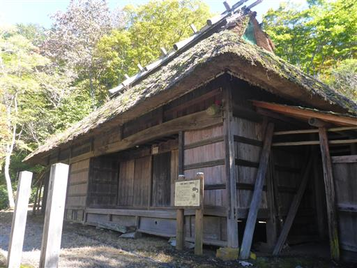
駐車場の側の開けた場所に出てくる。
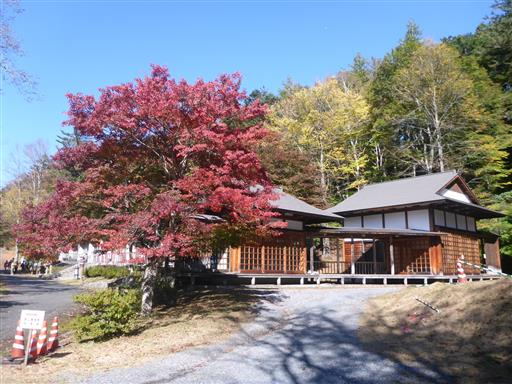
三峰ビジターセンターに立ち寄ってみることにする。
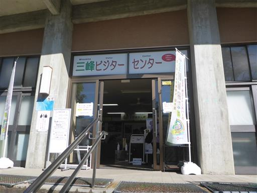
展示物は秩父の山々のジオラマと動物の剥製、写真などなど。
眼下に見える駐車場は車でいっぱいだ。
ここから三峯神社に向かう。妙法ヶ岳とは逆方向にあったため、朝はスキップしていた。
山の中にあるとは思えない、とても立派な山門だ。
灯篭が立ち並んでいる。
何やら長蛇の列ができている。どうやら三峯神社にお参りする人の列のようだ。
この列に並んでいたら30分はかかりそうだ。神社は下から眺めるのみにしておく。
さすが三連休の中日。すさまじい人出だ。
美しく装飾された灯篭。
こちらは手水舎。こちらも装飾が美しい。
下山道は神社を抜けたその先なので、境内を通り過ぎていく。
三峯神社興雲閣。立派な宿泊施設だ。
だんだんと人影が少なくなってくる。
山頂でも三峯神社でも昼食を食べ損ねたので歩きながら食べる。
視界が開けた場所に出てくる。左に見えるのが妙法ヶ岳。
そこから右に雲取山に続く尾根が伸びている。
ここはかつてロープウェイの山頂駅があった場所。
広場にはなっているが建物があった痕跡はなく、きれいに片付けられている。
かつてロープウェイが通った場所。2006年に廃止されたようだ。
三峯神社まで距離があるのと、もっと便利な場所に車の駐車場があるため、需要は少なかっただろう。
ここからは裏参道を淡々と降るのみ。
途中、車が打ち捨てられている。
切り株を覆う立派なコケ。
なにやら緑の葉が大量に落ちている。
木の間から山を見上げる。見えているのは妙法ヶ岳だろうか？
林道を横断する。
鳥居が倒れている。こちらの方はもうあまり整備されていなさそうだ。
二本のホースの間を通る。アクロバティックな登山道だ。
無事下山。
ここから車道を歩いて駐車場に向かう。
キャンプ場。多くのテントで賑わっている。
半洞窟・鍾乳洞の標識があったので、寄り道してみる。
こちらが神庭半洞窟。縄文時代から人が住んでいた形跡があるらしい。
岩の奥の小さな穴から水が流れ出ている。ちょっと探検は難しそうだ。
続いて神庭鍾乳洞。
入口はコンクリートで固められている。
とっても小さな洞窟。一歩入ったらもう終わり。
鍾乳洞らしい景色も見られず、ちょっと期待外れだ。
洞窟の近くにある夫婦滝を見学してから先に進む。
荒川に流入する沢を眺める。一本一本の沢が美しい。
岩の上に置かれている不思議な物体。15秒ほど考えて、ようやく動物の頭の骨と認識する。
荒川の沢沿いの道を歩く。
荒川に注ぎ込む沢。この辺りは急流が多いのだろうか？
激しく渦巻く荒川に合流している。
階段を登る。長くは続かないのだが、下山してから駐車場までは
車道だと思っていたので、ちょっと想定外だ。
竜門の滝。一筋の小さな滝だ。
ようやく登りの時に使った道と合流。
再び登竜橋で荒川を渡ったら駐車場だ。
三峯神社の鳥居を潜って無事登山終了。
地味な山だと思っていたが、山頂からの展望、三峯神社、滝など、意外と見所が多かった。
観光客が多くて驚いたが、三峯神社付近を除けば比較的静かな登山だった。